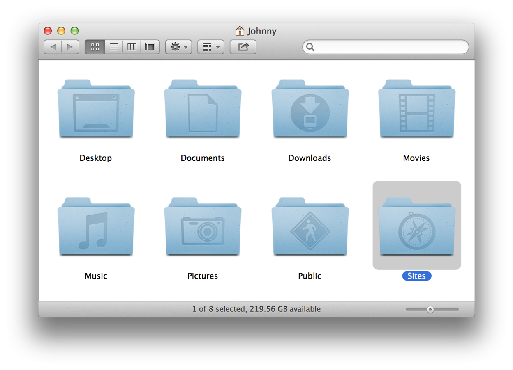
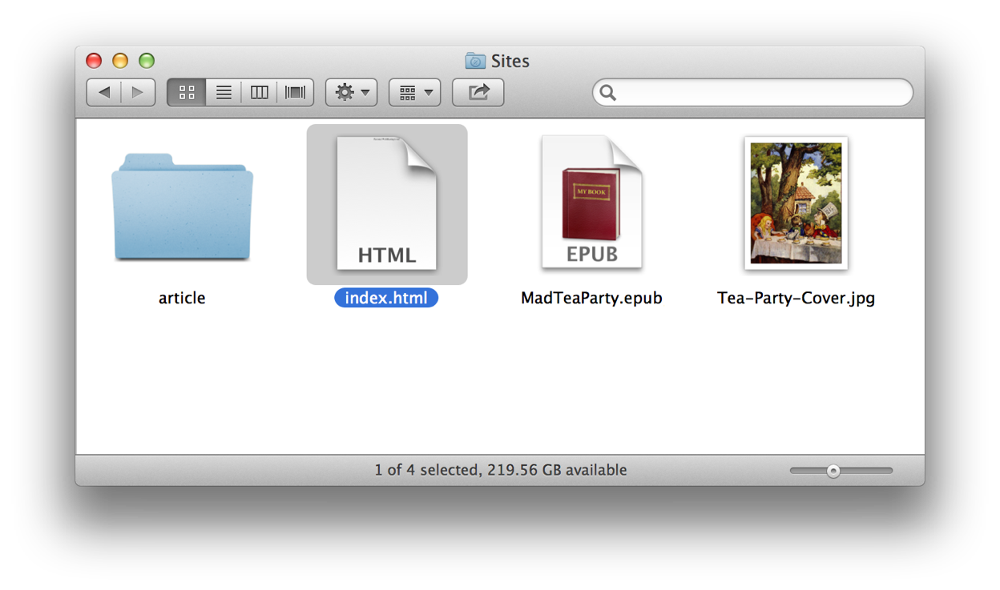
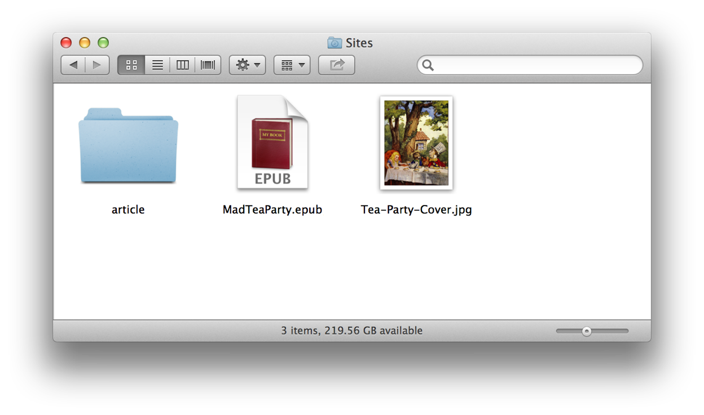
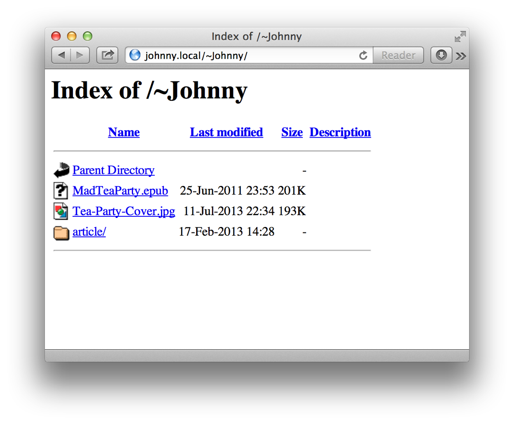
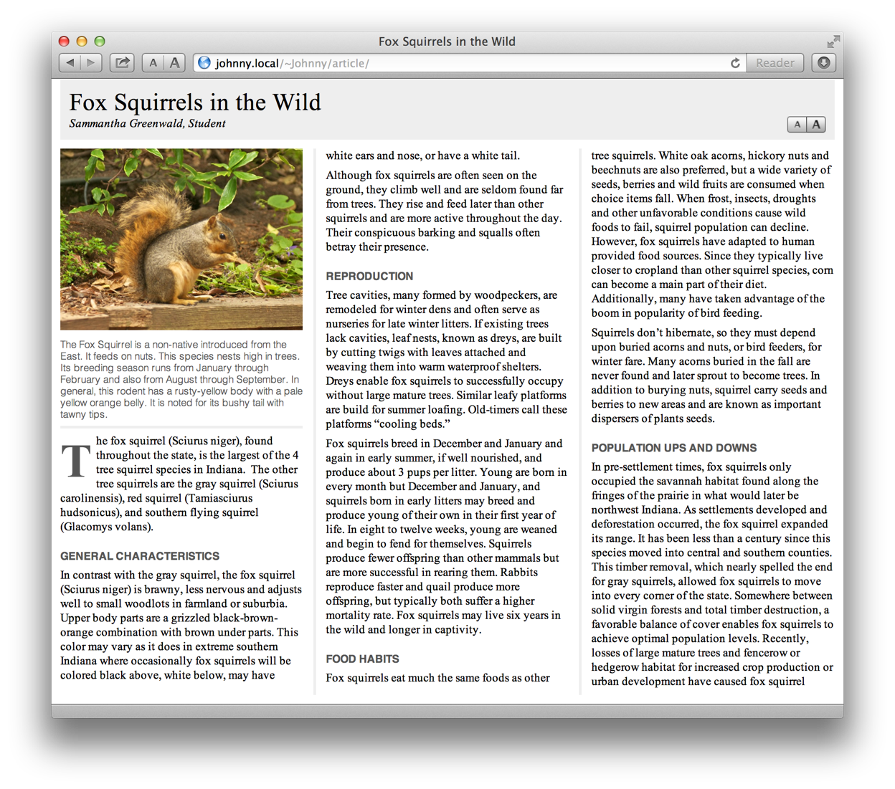
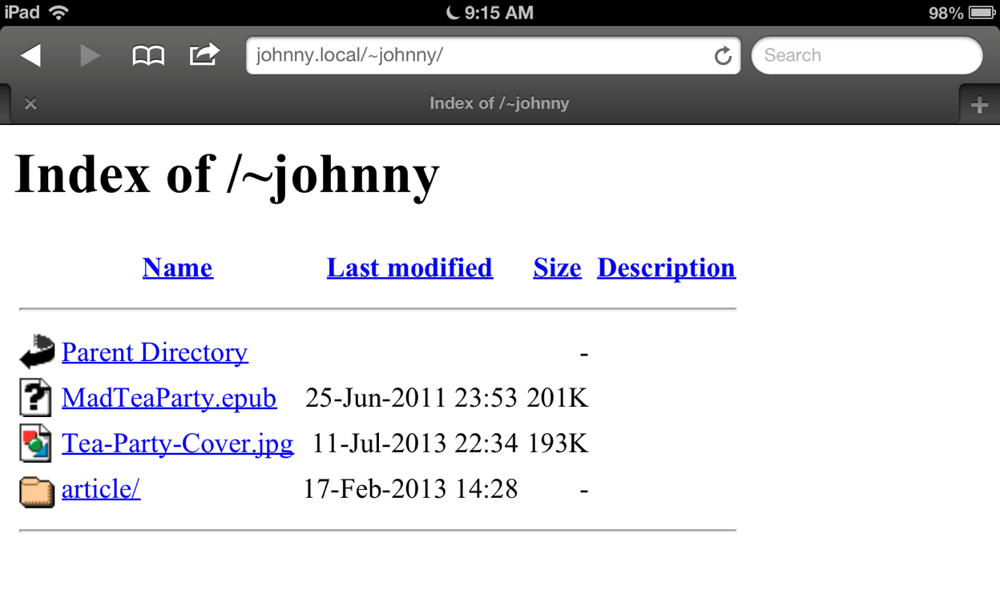
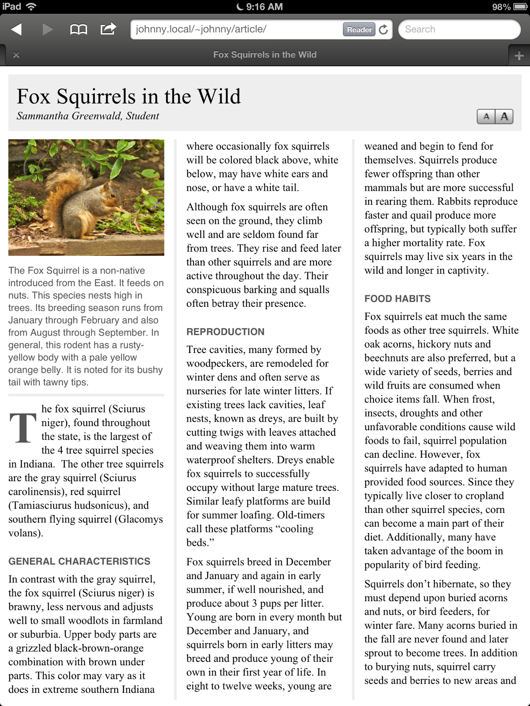
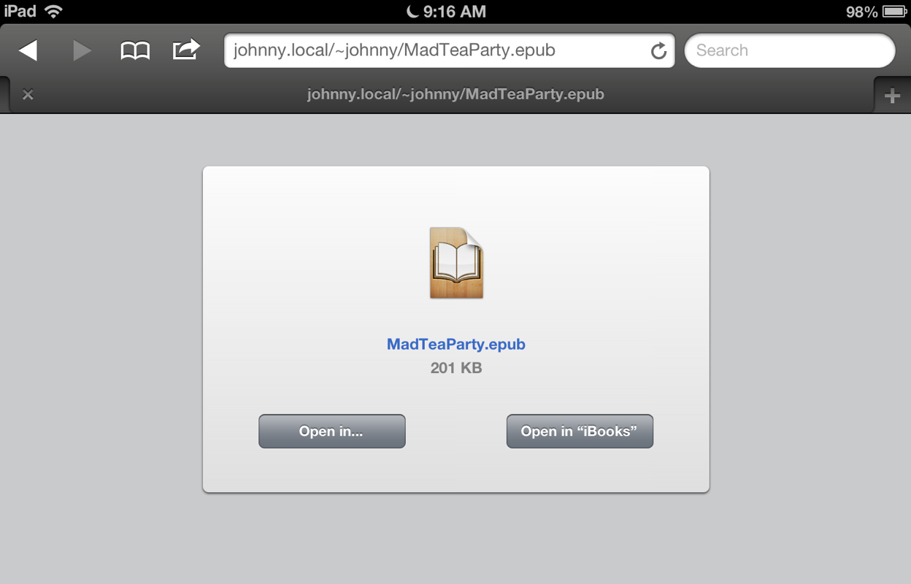

In the previous workshop segment, you activated the built-in Personal Web-Sharing feature of your computer. As part of the setup process, a Sites folder was created in your Home directory (see below). This folder will contain the items you wish to share with others on your local network.

With a very small amount of preparation, you’ll soon be actively web-publishing from your computer. The first step is to download some example items to place in the Sites folder.
DO THIS ►Download and unpack the ZIP archive containing example items to place in the Sites folder.
The unarchived folder contains three example items:
- MadTeaParty.epub - A digital book file in EPUB format (created using the tools from the One-Step Creation of Digital Books workshop).
- Tea-Party-Cover.jpg - An image file.
- article - A web-app folder containing HTML content in multi-column format (created using the tools from the Simple Template Publishing workshop).
DO THIS ►Move the downloaded example items into the Sites folder.
The Sites folder will now contain four items, the three downloaded example items, and the default webpage file (index.html) created by the setup AppleScript applet (see below).

When a Sites folder contains an index.html file, the HTML contents of the index.html file will be displayed to others when they enter the URL for your computer in a web browser application on their computer. When the Sites folder does not contain an index.html file, a list of links to the contents of the Sites folder will be displayed instead. This is what we want to display for web-sharing.
DO THIS ►Move the index.html file out of the Sites folder (see below).

Now that the sites folder does not contain an index.html file, a list of links to the items within the Sites folder, will be displayed in web-browser application of a local network user, when they enter the URL to your computer (see below).

When a connect user clicks one of the links, the contents of the linked item will be display within their browser (if possible). For example, here is what is displayed in Safari on OS X when a connected user clicks the “article” link:

Content made available through personal web-sharing can be easily viewed on iOS devices such as iPads and iPhones. Simply open the Safari browser on the devices and enter the URL for the local network address of the publishing computer, followed by a forward slash (/), a tilde character (~), and the name of the user who is hosting the content, like this: johnny.local/~Johhny/
The list of links to the content of the shared Sites folder will be displayed (see below):

When the viewer taps a link, the content will be displayed, as in this example where the viewer tapped the “article” link: (see below)

On an iOS device, tapping a link to a digital book, will display a screen allowing import of the book into iBooks or another application: (see below)
